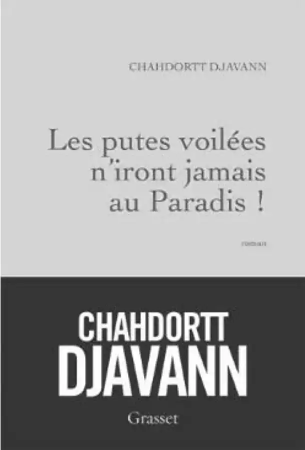
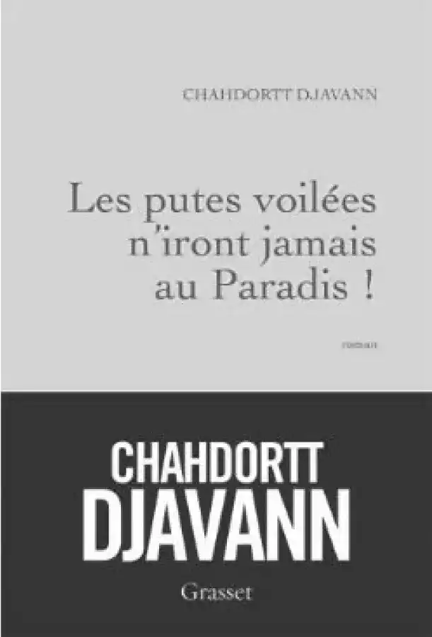

La muette
« J’ai quinze ans, je m’appelle Fatemeh mais je n’aime pas mon prénom. Je vais être pendu »
Un jour Chahdortt Djavann, une auteure d’origine iranienne reçoit cet étrange manuscrit. Elle le lit, bouleversée, elle décide de le publier. Il vient tout droit d’Iran, il est écrit par une adolescente.
Après lecture on peut se poser la question de la réalité de cette histoire. Même si ce roman peut paraitre fictif, cette histoire représenterait une réalité pour un grand nombre de familles iraniennes. L’écriture, la syntaxe, font de ce roman le véritable journal intime d’une jeune fille, et amplifie le côté réaliste. Cela faire rentrer le lecteur dans l’histoire bouleversante de Fatemeh.
Fatemeh rend dans son récit hommage à la femme qui l’a élevée. Elle se sent plus proche de sa tante que de sa mère : la femme qu’elle admire, qui ne porte pas de voile, qui fume, qui vit son amour interdit.
Fatemeh, quinze ans, décide au fond de sa cellule d’écrire son histoire pour ne pas être oubliée.
Elle est condamnée à mort. Fatemeh vit en Iran, avec ses parents et sa tante paternelle : « La muette ». Celle-ci est devenue muette après vu son père tuer sa mère, depuis, sous le choc elle n’a plus prononcé un seul mot. Fatemeh vit sa vie, lorsqu’un jour sa tante va tomber amoureuse de son oncle maternel. Elle va alors observer avec son regard de jeune fille, la transformation de sa tante. « La muette » devient une femme. L’oncle succombe et une relation se déclenche entre la muette et l’oncle. La mère de Fatemeh l’apprend. Sa mère vit dans les traditions et est horrifiée de cette situation. La muette est alors condamnée à mort. Au fil de l’histoire, le lecteur apprend que l’unique bonheur qu’ait connu Fatemeh au cours de son existence se résume à son adoration pour la muette.
Fatemeh vit alors dans l’Iran où les mollahs imposent leurs lois. Son admiration pour sa tante va mener ses parents à prendre une terrible décision pour elle et son avenir.

Extrait
« De la volonté, la muette n’en manquait pas ; seuls des êtres d’une intelligence médiocre, comme ma mére pouvaient sous-estimer son opinâtreté ; elle qui s’était obstinée dans le silence pendant des années ! Elle avait décidé de mettre un terme à ce projet de mariage avec le mollah ; et elle l’avait fait d’une façon radicale. Elle s’était offerte à l’homme qu’elle aimait, sans rien en demander en échange. Un acte plus que révolutonnaire pour une femme, et pas seulement dans notre milieu, mais dans ce pays où l’amour est toujours affaire de l’honneur des frères et des pères, une affaire de contrat et d’arrangement, un simple commerce, Dans ce pays ou l’amour est interdit. »
Livres associés
 
